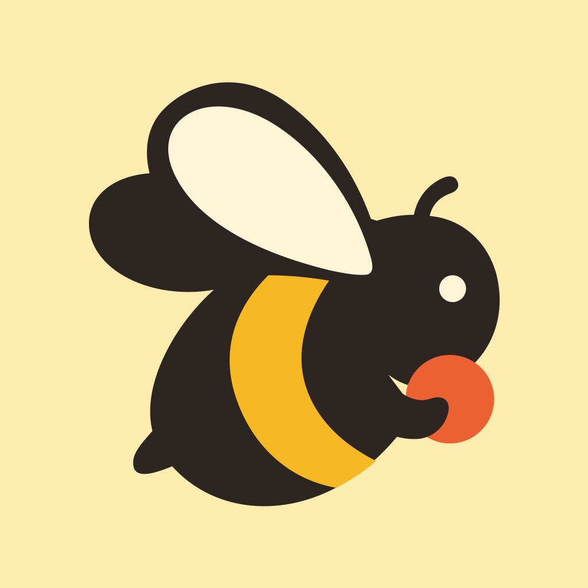
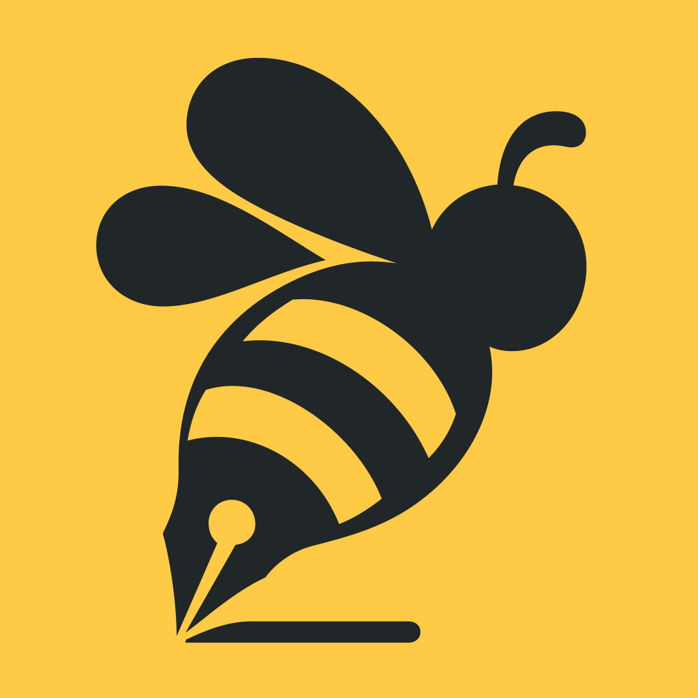
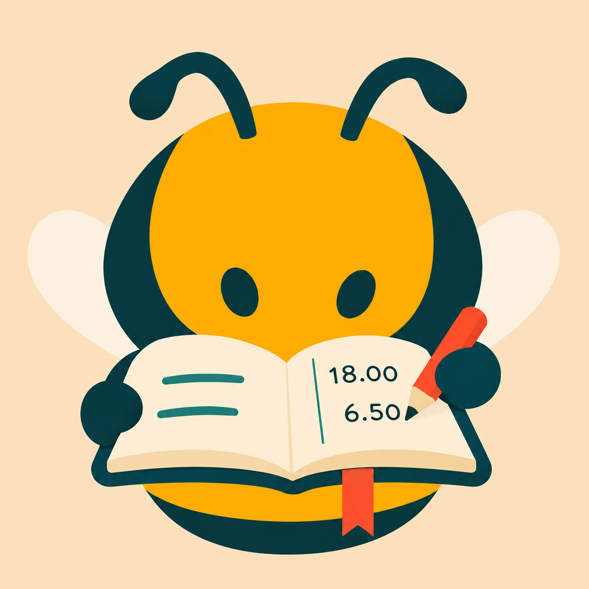
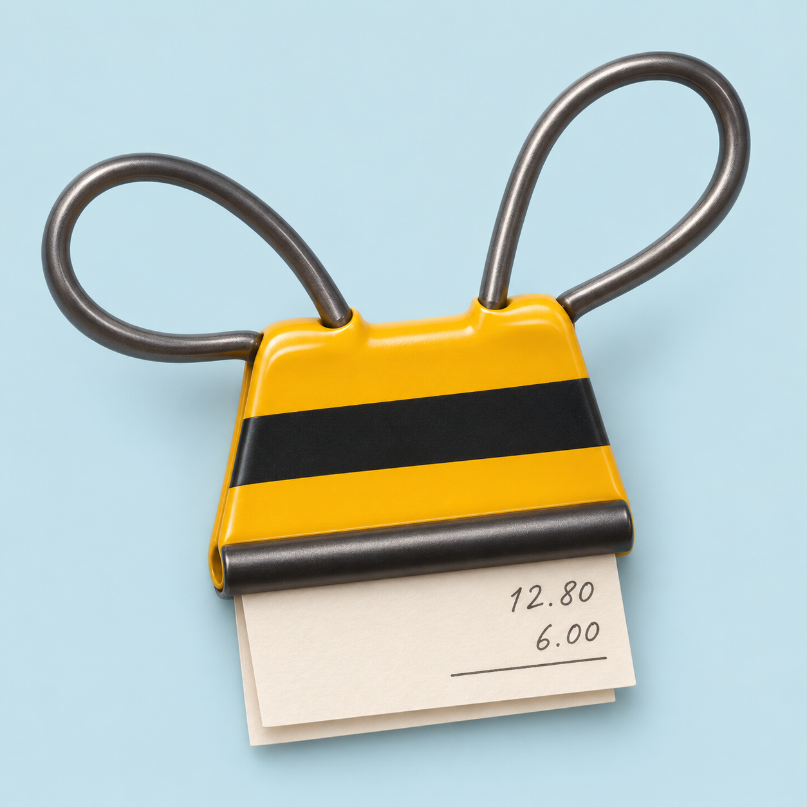
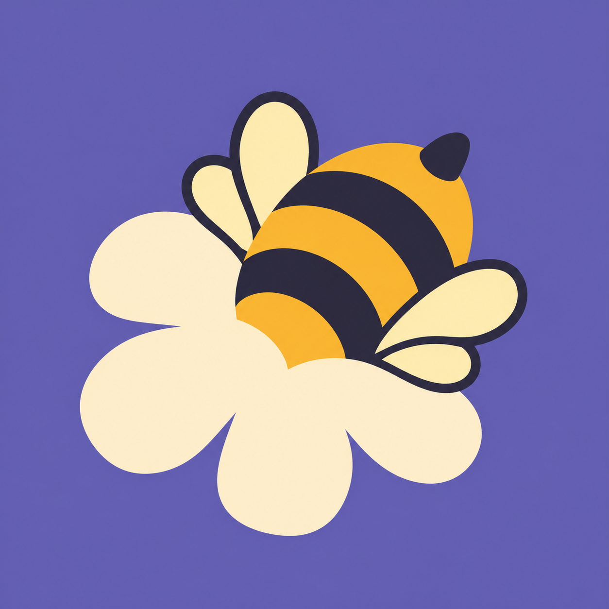
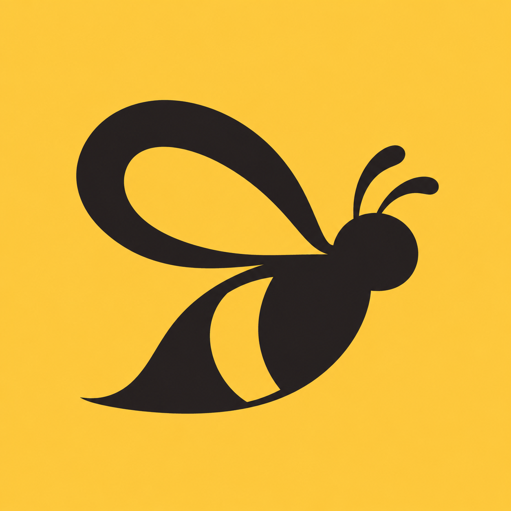

应用图标创意库
| 图标与 24 px 预览 | 方案 | 稿件 |
|---|---|---|
|
 |
采粉蜂 小蜂侧身飞起，前足抱住一粒花粉。 2026-11-25 · 保留备选 |
可编辑 SVG · 1024 px PNG · 最初草图 |
|
 |
落笔蜂 小蜂斜斜起飞，钢笔尖藏在蜂尾里，刚写好的一横留在原地。 2026-11-25 · 探索稿 |
可编辑 SVG · 1024 px PNG · 概念原图 · 生成提示词 |
|
 |
小账房 小蜂一只手托着账页，另一只手刚用红铅笔记下 6.50。 2026-11-25 · 探索稿 |
记账稿 PNG · 看账初稿 · 两次生成提示词 |
|
 |
蜂翼票夹 把夹票据的两只金属夹柄弯成蜂翅，夹身的黄黑横带就是蜂纹。 2026-11-25 · 已搁置 |
金属质感稿 · 平面 SVG · 平面 PNG · 质感稿提示词 |
| 收支蜂 两道蜂纹各占一行，读作收入的加号和支出的减号。 2026-11-25 · 已搁置 |
可编辑 SVG · 1024 px PNG | |
| 记字章 把「记」字言字旁的一点画成金色小蜂，留在账本封面的一角。 2026-11-25 · 已搁置 |
可编辑 SVG · 1024 px PNG | |
|
 |
埋头蜂 小蜂一头钻进花心，只露出翅膀和圆滚滚的尾巴。 2026-11-25 · 已搁置 |
概念原图 · 生成提示词 |
| 出逃算珠 算盘空出一档，那颗金色算珠长出翅膀飞走了。 2026-11-25 · 已搁置 |
概念原图 · 初稿 · 生成提示词 | |
|
 |
一笔蜂 墨线绕出一只翅膀，收笔处拖出微翘的蜂尾。 2026-11-25 · 已搁置 |
概念原图 · 生成提示词 |


每个方案各有一个目录。新增时把原图、已有的源稿放在一起，在表内加一行，再运行 npm run index 刷新离线画廊。